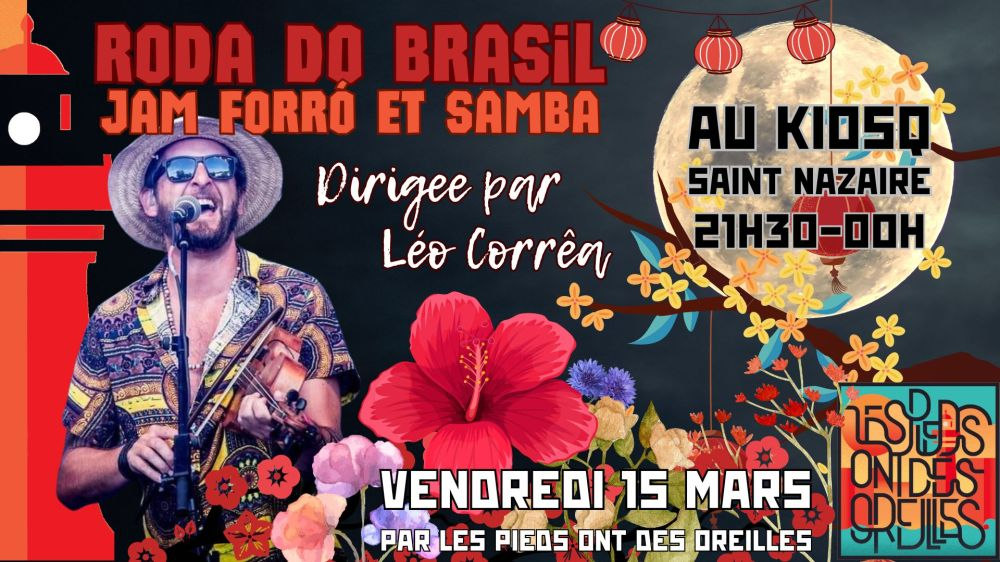

Roda do Brasil (forró/samba) avec Léo Corrêa

Roda ouverte aux musiciens de tout bord.
Dirigée par l’artiste brésilien Léo Corrêa.
Les musiciens, assis en cercle, interprètent les standards de forró et de samba, pendant que le public sirote un verre ou danse autour des musiciens.
Une sorte de jam session, où les artistes et le public se mélangent et fusionnent.
Répertoire:
https://docs.google.com/spreadsheets/d/1xVPaNyS5gBpClGl77E4OHauHICNfpvD4irbe3O8Gbao/edit?usp=sharing
Participation libre (chapeau).